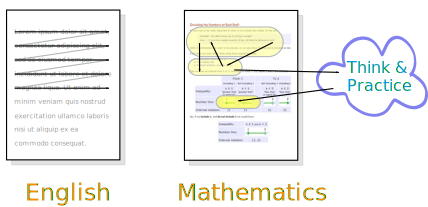
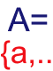
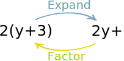
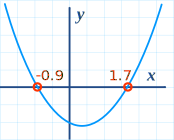
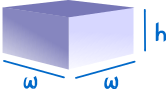

Algebra 2
Also known as "College Algebra"
OK. So what are you going to learn here?
You will learn about Numbers, Polynomials, Inequalities, Sequences and Sums, many types of Functions, and how to solve them.
You will also gain a deeper insight into Mathematics, get to practice using your new skills with lots of examples and questions, and generally improve your mind.
With your new skills you will be able to put together mathematical models so you can find good quality solutions to many tricky real world situations.
Near the end of most pages is a "Your Turn" section ... do these! You need to balance your reading with doing. Answering questions helps you sort things out in your mind. And don't guess the answer: use pen and paper and try your best before seeing the solution.
Language
So what is this thing called Mathematics? And how do you go about learning it?

Sets
Next, we need to think about mathematics in terms of sets.

Numbers
Now we know what a set is, let us look at different sets of numbers that are useful:
- The Evolution of Numbers
- Prime and Composite Numbers
- Fundamental Theorem of Arithmetic
- Whole Numbers and Integers


Inequalities
"Equal To" is nice but not always available. Maybe we only know that something is less than, or greater than. So let's learn about inequalities.
a≥b
- Introduction to Inequalities
- Properties of Inequalities
- Solving Inequalities
- Solving Inequality Word Questions
- Intervals
Exponents
We will be using exponents a lot, so let's get to know them well.

- Exponents
- Variables with Exponents
- Using Exponents in Algebra
- Squares and Square Roots
- Squares and Square Roots in Algebra
- nth Root
- Fractional Exponents
- Laws of Exponents
- Exponents of Negative Numbers
Polynomials
Polynomials were some of the first things ever studied in Algebra. They are simple, yet powerful in their ability to model real world situations.

- What is a Polynomial?
- Adding And Subtracting Polynomials
- Multiplying Polynomials
- Polynomials - Long Multiplication
- Dividing Polynomials
- Polynomials - Long Division

Graphing Polynomials
Equations
And, of course, we need to know about equations ... and how to solve them.
- Equations and Formulas
- Solving Equations
- Simplify
- Solving Word Questions
- Zero Product Property
- Implication and Iff
- Theorems, Corollaries, Lemmas
Graphs
Graphs can save us! They are a great way to see what is going on and can help us solve many things. But we need to be careful, as they sometimes don't give the full story.

- Cartesian Coordinates
- Pythagoras' Theorem
- Distance Between 2 Points
- Graph of an Equation
- Finding Intercepts From an Equation
- Symmetry in Equations
Linear Equations
They are just equations for lines. But they come in many forms.

- Equation of a Straight Line
- Linear Equations
- Point-Slope Equation of a Line
- General Form of Equation of a Line
- Equation of a Line from 2 Points
- Midpoint of a Line Segment
- Parallel and Perpendicular Lines
Functions
A function relates an input to an output. But from that simple foundation many useful things can be built.

- Increasing and Decreasing Functions
- Maxima and Minima of Functions
- Even and Odd Functions
- Set-Builder Notation
- Function Transformations
- Equation Grapher
- Operations with Functions
- Composition of Functions
- Inverse Functions
Equations of Second Degree
"Second degree" just means the variable has an exponent of 2, like x2. It is the next major step after linear equations (where the exponent is 1, like x).

- Quadratic Equations
- Factoring Quadratics
- Completing the Square
- Derivation of Quadratic Formula
- Graphing Quadratic Equations
- Quadratic Equations in the Real World
- Circle Equations
Solving
We already have experience in solving, but now we can learn more!

- Mathematical Models and Mathematical Models 2
- Approximate Solutions
- Intermediate Value Theorem
- Solving Radical Equations
- Change of Variables
- Algebra Mistakes
Solving Inequalities
We learned about inequalities above, now let's learn how to solve them.
- Solving Inequalities
- Graphing Linear Inequalities
- Inequality Graphing Tool
- Solving Quadratic Inequalities
- Solving Rational Inequalities
- Absolute Value in Algebra
Exponents and Logarithms
We already know about exponents ... well logarithms just go the other way. And together they can be very powerful.

- Introduction to Logarithms
- Exponents, Roots and Logarithms
- Working with Exponents and Logarithms
- Exponential Function
- Logarithmic Function
- Exponential Growth and Decay
Systems of Linear Equations
What happens when we have two or more linear equations that work together? They can often be solved! It isn't very hard but can take a lot of calculations.

- Matrices
- Types of Matrix
- How to Multiply Matrices
- Determinant of a Matrix
- Inverse of a Matrix:
- Scalar, Vector, Matrixand Vectors
- Matrix Calculator
- More at Matrix Index
Probability

Is it likely? You be the judge!
Sequences, Series and Partial Sums
A Sequence is a set of things (usually numbers) that are in order. We can also sum up a series, where Sigma Notation is very useful.
- Sequences
- Sequences - Finding A Rule
- Sigma Notation
- Partial Sums
- Arithmetic Sequences and Sums
- Geometric Sequences and Sums
Finally
These last few subjects use what we have learned above.
And that is all!
But there are many other interesting algebra topics such as:
- Euler's Formula for Complex Numbers
- Taylor Series (needs a basic understanding of derivatives)